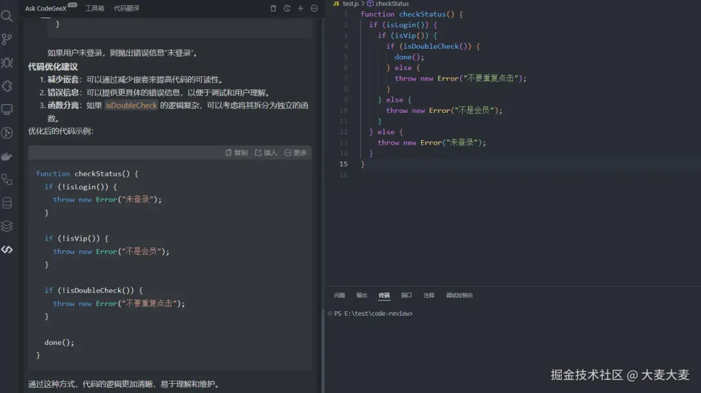

Code Review 通常也简称 CR，中文意思就是 代码审查
一般来说 CR只关心代码规范和代码逻辑，不关心业务
但是，如果CR的人是组长，建议有时间还是看下与自己组内相关业务，能避免一些生产事故的发生
主要还是看公司业务情况吧，如果前端组长需求不多的情况，是可以做下CR，能避免一些生产事故
CR 能力CR，晋升和面试，不就有东西吹了不是可以从几个方面入手
具体要怎么做呢？
传统的做法是PR时查看，对于不合理的地方，打回并在PR中备注原因或优化方案
每隔一段时间，和组员开一个简短的CR分享会，把一些平时CR过程中遇到的问题做下总结
当然，不要直接指出是谁写出的代码有问题，毕竟这不是目的，分享会的目的是交流学习
人工CR需要很大的时间精力，与心智负担
随着 AI 的发展，我们可以借助一些 AI 来帮我们完成CR
接下来，我们来看下，vscode中是怎么借助 AI 工具来 CR 的
安装插件 CodeGeex
新建一个项目
mkdir code-review
cd code-review
创建 test.js 并用 vscode 打开
编写下 test.js
function checkStatus() {
if (isLogin()) {
if (isVip()) {
if (isDoubleCheck()) {
done();
} else {
throw new Error("不要重复点击");
}
} else {
throw new Error("不是会员");
}
} else {
throw new Error("未登录");
}
}
这是连续嵌套的判断逻辑，要怎么优化呢？
侧边栏选择这个 AI 插件，选择我们需要CR的代码
输入 codeRiview，回车
我们来看下 AI 给出的建议
